For my first work with the Shopbot (also the first one after the software update that gave us some trouble), I was asked to think of a simple 2D job that included a pocket and an profile. For a long time that I had the idea of physicalizing a drawing that has fascinated me since I was a teenager, when I first read one of the most translated french books in history, The Little Prince.
In one of the chapters, and next to a drawing of something that at first looked like a hat, the protagonist says: “I showed my masterpiece to the grown-ups and ask them if my drawing frightened them. They answered: “Why should anyone be frightened by a hat?” My drawing did not represent a hat. It was supposed to be a boa constrictor digesting an elephant. So I made another drawing of the inside of the boa constrictor, to enable the grown-ups to understand. They always need explanations.
My drawing number 2 looked like this:
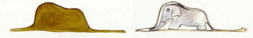
Well this is how such a lovely scene looked after being milled in oak wood and treated with tung oil in the Fablab.
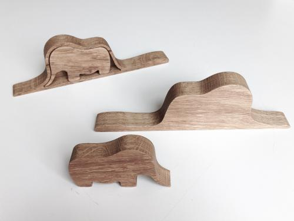
Process
After having the 2d outline of the 2 figures (find attached) and the piece of oak properly clamped to the table, I started by surfacing the wood with the 36mm 2 flutes end mill, making sure the heads of the screws were drowned into the wood far bellow the surface, so the end mill would never touch them). Although the piece of wood was pretty nice, I wanted to assure a properly finished surface and an homogeneous thickness to work with.
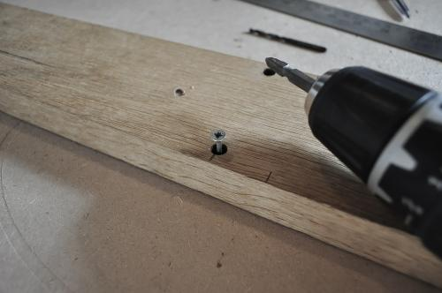
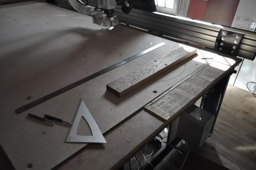
After doing this with both surfaces, I proceeded to mill the pocket first and the profile at the end, both with a 4mm 2 flutes end mill, adding a couple of tabs that keep the piece attached to the block and need to be sanded away afterwards.
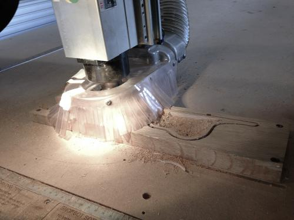
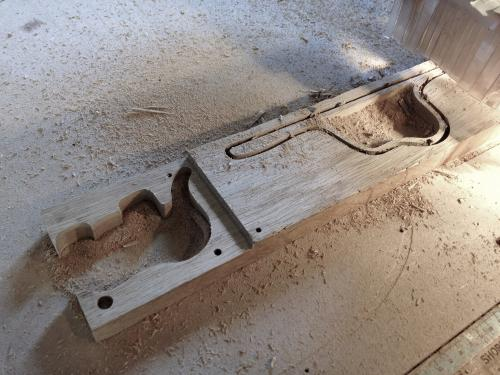
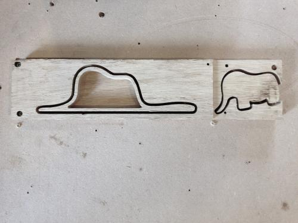
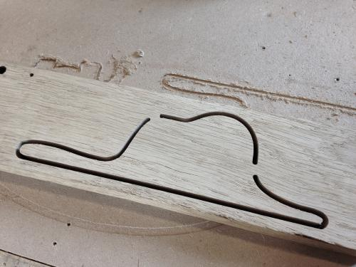
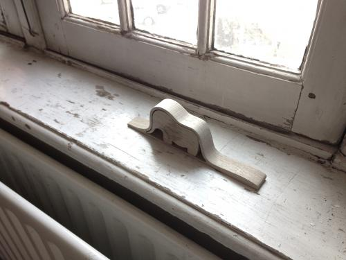
This is the final result after some sanding and a treatment with tung oil.
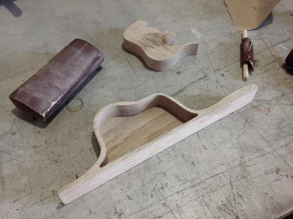
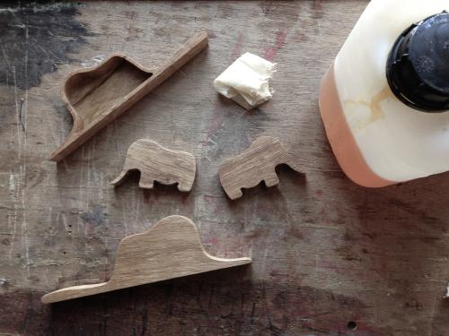
Attached you can find the outline shape of the 2 figures and a 3d model that, although it is not necessary to run the job, can help you figure out the depth of the pocket for the elephant. In my case 25 mm was the total thickness of the bigger piece, whereas the depth of the pocket (and therefore the thickness of the elephant) was 20 mm.
The settings used for the Shopbot were as follow. In any case, you should not completely rely on them, since every piece of wood is different. Take this settings as reference but listen to the machine and specially make sure that you are not burning the surface when using the big milling bit. It can be dangerous!

This work is licensed under a Attribution Non-commercial Share Alike Creative Commons license